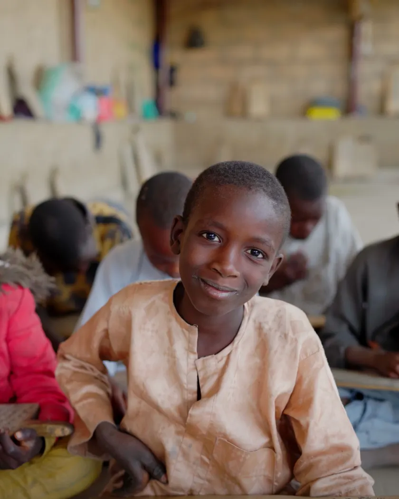

نوصل كفالتك إلى طفل بعينه، ونتابع أثرها معك.
بدأنا عام ٢٠١٢ بأربعة عشر طفلاً في مخيم واحد. اليوم نعمل في ١٢ دولة، ولم نغيّر القاعدة التي بدأنا بها: لا نُظهر حالة لم نزرها بأنفسنا.
- يتيم مكفول اليوم
- 0
- سنة من العمل الموثّق
- 0
- دولة نعمل فيها
- 0
- مشرفاً ميدانياً
- 0

بدأت بسؤال واحد لم نجد له جواباً مقنعاً
في ٢٠١٢ تبرّع مؤسسنا لجمعية، وحين سأل بعد ستة أشهر «أين ذهب المبلغ؟» لم يحصل على جواب. لم يكن يشك في أمانتهم، لكنه أدرك أن غياب الجواب نفسه هو ما يوقف آلاف الناس عن العطاء.
فبدأنا بأربعة عشر طفلاً، ودفتر ورقي، وقاعدة واحدة: كل كافل يعرف اسم طفله وصورته وتقريره. القاعدة لم تتغيّر منذ ذلك اليوم، لكن الدفتر صار منصة.
رؤيتنا
عالم لا يُترك فيه طفلٌ وحيداً لأن أحداً لم يثق أن دعمه سيصل.
رسالتنا
أن نجعل الكفالة علاقة مرئية وموثّقة، لا تحويلاً مصرفياً مجهول المصير.
أربعة مبادئ لا نتنازل عنها
حتى حين تكلّفنا تبرعات.
-
01
كرامة الطفل أولاً
لا ننشر صور أطفال باكين أو مشاهد إذلال لجمع التبرعات، مهما كان أثرها على الحصيلة. الطفل ليس أداة إعلانية.
-
02
شفافية غير مشروطة
الميزانية المدقّقة منشورة للعموم لا للكفلاء فقط. ومن حق أي شخص أن يسأل عن أي بند ويحصل على جواب خلال ٧٢ ساعة.
-
03
الأسرة قبل المؤسسة
بقاء الطفل بين أهله خيرٌ من أفضل دار رعاية. لذلك ندعم الأسرة كاملةً كي لا يُنتزع الطفل منها لأسباب مادية.
-
04
حتى يقف بنفسه
الكفالة لا تنتهي عند الثامنة عشرة. برنامج التمكين يرافق الشاب حتى أول وظيفة أو مشروع يعيله.
ثلاث مراحل قبل أن تظهر أي حالة
لا تُنشر حالة على المنصة قبل أن تمرّ بالمراحل الثلاث كاملة، ثم تبقى تحت المتابعة ما دامت الكفالة قائمة.
- متوسط الأيام بين الترشيح والنشر
- 23
- من الحالات المرشّحة نرفضها سنوياً
- 18%
-
الترشيح والتحقق الوثائقي
شهادة وفاة الوالد، إثبات إقامة، وتقرير حالة اجتماعية من جهة محلية معتمدة.
-
زيارة ميدانية غير معلنة
مشرف من فريقنا يزور البيت دون موعد مسبق، ويوثّق الحالة المعيشية كما هي فعلاً.
-
المراجعة والموافقة
لجنة من ثلاثة أعضاء تراجع الملف، وتحدد البرنامج المناسب ومبلغ الكفالة العادل.
-
متابعة كل ٩٠ يوماً
زيارة ميدانية دورية، وتقرير مصوّر يصل الكافل، وتحديث للملف على المنصة.
هل ما زال لديك سؤال؟
نجيب على كل سؤال خلال ٧٢ ساعة، مهما كان دقيقاً أو محرجاً.